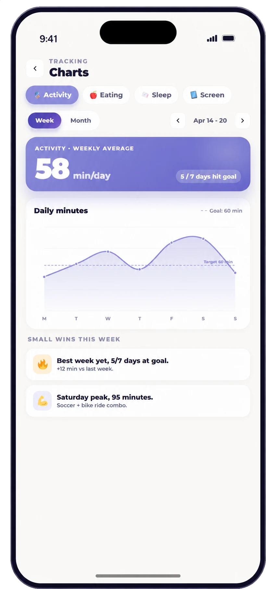

“Be active,” “eat better,” and “use screens less” are wishes, not instructions. A SMART goal turns a broad direction into an action a child can recognize and a family can support.
Make the goal specific, measurable in a simple way, achievable for this child, relevant to something they care about, and time-bound for a short experiment. Let the child help choose and revise it.
Educational, not medical advice
Children differ in health, development, ability, sensory needs, and family circumstances. Use this guide for general education and ask your child’s pediatrician about individual needs or safety concerns.
What SMART means in child-friendly language
- Specific: “I know exactly what I will do.”
- Measurable: “I can tell whether I tried it.”
- Achievable: “It fits my life and my current abilities.”
- Relevant: “It matters to me or helps something I care about.”
- Time-bound: “I know when I will try it and when we will review it.”
SMART does not mean difficult. “For the next five school days, I will put my shoes by the door after homework” can be a useful preparation goal.
5 SMART movement goals
- After school on Monday, Wednesday, and Friday, I will dance to two songs before homework for two weeks.
- I will walk with an adult for ten minutes after dinner on four days this week.
- At each homework break today, I will stand, stretch, or march for two minutes.
- I will try one non-team activity from our family list by Sunday and say what I liked or disliked.
- I will pack my jump rope beside my backpack on school nights this week.
The CDC’s 60-minute daily activity guideline for ages 6–17 is a public-health recommendation, not a reason to dismiss a smaller starting action.
5 SMART eating and food-learning goals
- I will choose one fruit or vegetable to help wash for dinner twice this week.
- At Saturday’s grocery trip, I will find one food from three MyPlate groups.
- I will help make one family snack on Sunday by measuring, stirring, or arranging.
- I will describe one food’s color, smell, or texture at two meals this week, without being required to taste it.
- I will put my water bottle beside my backpack before bed on four school nights.
5 SMART sleep-routine goals
- For five school nights, I will start pajamas when the 8:00 reminder sounds.
- I will put my device on the kitchen charger before brushing my teeth tonight.
- I will choose tomorrow’s bedtime book before dinner on three days this week.
- I will follow our wash, pajamas, read, lights-out sequence for one week and tell an adult which step is hardest.
- I will write one worry or reminder on paper before getting into bed for the next three nights.
5 SMART screen-balance goals
- Before starting a game, I will choose the ending point and tell an adult on three days this week.
- I will keep my device away from the table during dinner for five days.
- I will turn off autoplay with an adult tonight.
- When screen time ends this week, I will choose drawing, music, or a walk from my next-activity list.
- I will leave my device outside the bedroom overnight for the next three school nights.
Review the experiment, not the child
At the review date, ask what helped, what got in the way, and whether the goal should be kept, shrunk, or replaced. Goal-setting research in youth settings suggests goals and self-monitoring can support behavior-change work, but no single worksheet or app guarantees a result. A goal that does not fit provides information.
“You tried it twice and planned five times. What was different on the two days it worked? Should we change the cue or make the action smaller?”
Frequently asked questions
Should a child write their own SMART goal?
Let the child contribute as much as their age and needs allow. An adult can help make the wording clear without taking over the choice.
How long should the first goal last?
A one-week experiment is often long enough to observe patterns and short enough to adjust without feeling trapped.
What if the goal is too easy?
Easy is useful when a routine is new. Build confidence and repeatability before adding difficulty.
Should goals focus on weight?
No. Use specific, supportive behaviors such as movement, meal participation, bedtime routines, or screen boundaries—not weight or body-size targets for a child.
Sources and further reading
Choose one SMART goal in ProudMe
Choose one manageable action, notice the attempt, and keep the conversation going. ProudMe supports healthy-habit reflection; it does not provide medical care or guarantee behavior change.
